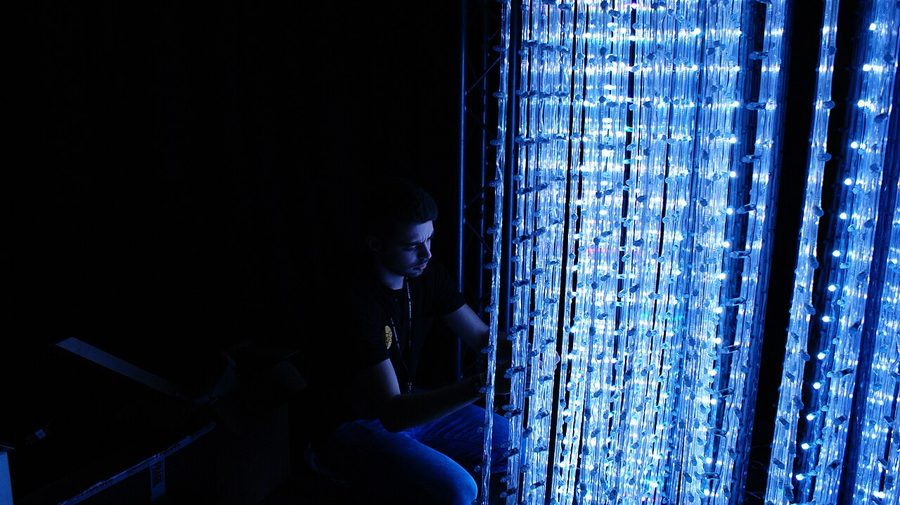

inthemix is going to Barcelona for Sónar Festival 2012



Over the past few days inthemix has allowed you to take an informed peek into all the spectacle, wonder and excess of the Electric Daisy Carnival in Las Vegas. This weekend, we’ll be giving you a look into a completely different, but no less essential entry into the global festival circuit: Sónar Festival 2012, which explodes across the Catalonian capital of Barcelona from Thursday 14th to Saturday 16th June.
We’ll be bringing you daily reports on all the musical action, as well as photo galleries over the course of the weekend, and a hotspot where you can find all of the performances that are set to stream live from the festival over the three days.
Some of the highlights attendees are looking forward to this year? No less than Amon Tobin, Nicolas Jaar, deadmau5, Hot Chip, Modeselektor, James Blake, Fatboy Slim, Richie Hawtin, Squarepusher, Luciano, Azari & III, Jacques Lus Cont, Friendly Fires, Metronomy, John Talabot, Annie Mac and many more.
Sónar Festival is truly unique, in that it takes place across two different elements; ‘Sónar by Day’ element takes place in the city center and puts the focus on new and upcoming talent, while ‘Sónar by Night’ sees punters venturing outside of the city for some of the biggest names in electronic music and beyond. And of course, just as many clubbing fanatics flock to Barcelona for the countless ‘Off Sonar’ parties happening over the weekend.
There will be more than a few pool parties to heck out, so you can be sure that inthemix will try and squeeze in as many of them as possible. Stay tuned for plenty of Sónar Festival 2012 updates and stories over the weekend!